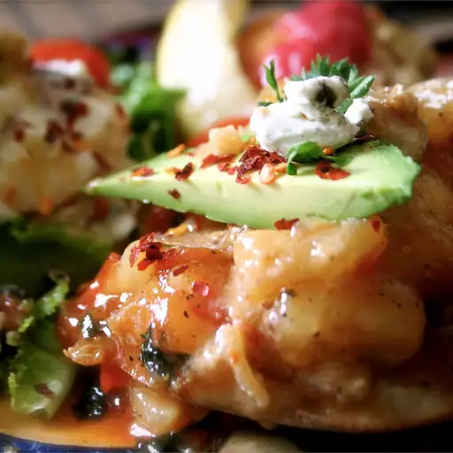

Aloha Chicken Burger
Home

Description
A sandwish that includes a wonderfully juicy chicken breast marinated in soy sauce that is grilled to perfection, toppped with bacon, swizz cheese, pinapple, tomatoes, and lettuce all placed between
two halves of a toasted bun.
Ingredients
- 2 skinless, boneless chicken breast halves
- 1/4 cup of soy sauce
- 3 slices of thick cut bacon
- 2 large hamburger buns, split
- 1 tablespoon of softened butter
- 1/4 cup of teriyaki sauce
- 2 slices of swizz cheese
- 2 tablespoons of mayonnaise
- 2 slices of pinappple
- 2 slices of tomatoes
- 2 slices of iceberg lettuce
Steps
- Place chicken breasts into a plastic zipper bag with soy sauce, seal the bag, and marinate in refrigerator for 30 minutes. While chicken is marinating, place bacon in a large, deep skillet,
and cook over medium-high heat, occasionally turning until evenly browned, about 10 minutes.
- Preheat an outdoor grill for medium heat and lightly oil the grate.
- Remove chicken from soy sauce, and discard excess soy sauce. Place chicken breasts onto the preheated grill, and grill until chicken shows good grill marks, is no longer pink inside, and juices
run clear, 4 to 5 minutes per side. When chicken is almost done, brush each piece generously on both sides with teriyaki sauce to finish grilling. Place a slice of Swiss cheese on each chicken breast,
and cover with a lid to help cheese melt onto chicken.
- While chicken is grilling, spread buns open on the grill and cook until toasted and showing grill lines, about 2 minutes.
- To assemble, spread grilled sides of each bun with mayonnaise, and top each bottom bun with a cooked chicken breast, 1 1/2 slices of bacon, a slice of pineapple, a slice from a head of lettuce,
a slice of tomato, and top bun.